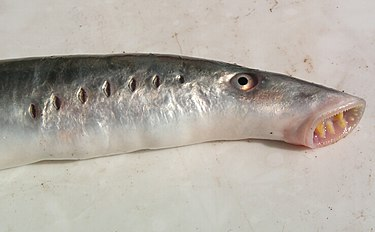

Úvod
Kruhoústí (Cyclostomata) je skupina primitivních obratlovců, kteří mají úhořovité tělo bez ploutví jen s ocasním lemem. Zahrnuje jednoduché sliznatky (Myxini) a pokročilejší mihule (Petromyzontida). Kruhoústí jsou podle některých názorů parafyletickou skupinou, novější studie je považují za monofyletické, takže vznik veškerých apomorfií u mihulí a čelistnatců je třeba považovat čistě za projev konvergentní evoluce, brali bychom-li však v úvahu první scénář, je třeba sliznatky považovat za bazální větev v rámci obratlovců a evoluční novinky přiřknout již společnému předkovi mihulí a čelistnatců.
> Popis, anatomie
Jejich kostra je chrupavčitá. Jejich ústa tvoří kruhovitá přísavka bez čelistí. Pokožka je velmi citlivá na světlo. Na přídi mají ústní nálevku s přísavkou, nápadné oči, čichovou jamku. Tělo je opatřeno žaberními štěrbinami (celkem 7), které jsou za hlavou a po stranách těla. Na hřbetě mají strunu hřbetní (která je rozčleněna na obratle ve tvaru trojúhelníku) s míšním kanálem. Mozkovna má primitivní stavbu, jejímž základem jsou dvě párové chrupavky. Základem obličejové části lebky jsou žaberní oblouky. Pokryv těla tvoří slizká kůže, pod ní se nachází segmentovaný boční sval, který se však neupíná na kostru, ale na vazivové přepážky mezi svalovými segmenty. Stavba mozku je velmi jednoduchá. Koncový mozek má čichové laloky a má čichové centrum. Nejvíce center je ve středním mozku. Typickým orgánem je proudový orgán. Srdce je příčně rozděleno na dva oddíly, předsíň a komoru.
> Způsob života
Mihule jsou gonochoristé, z vajíček se líhnou larvy, které jsou odlišné od dospělců – oči překryté kůží, ústa postrádají jazyk i zuby. Larva žije déle než dospělec několik let, živí se detritem a mikrořasami. Mořské druhy se po metamorfóze vracejí zpět do moře nebo brakických vod. Zde se pak živí dravě a také přisátím na hostitele – paraziticky. Dospělci nepřijímají potravu a před rozmnožováním táhnou proti proudu řek, kde po výtěru hromadně hynou. Nejběžnější druh u nás je mihule potoční (Lampetra planeri), jejíž larvy nazýváme minohy a žijí asi 4 roky převážně zahrabány v nánosech dna řeky. Vzhledem k znečištění našich řek se minohy dnes vyskytují již jen vzácně v některých lokalitách a jsou chráněnými živočichy.